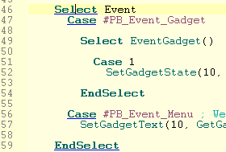
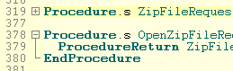
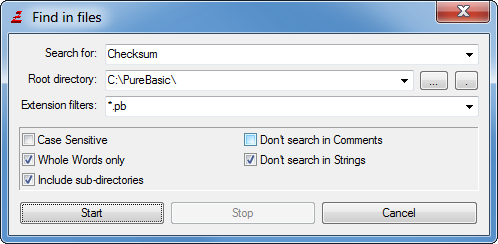

编辑功能菜单
PureBasic 集成开发环境（IDE） 用到的编辑功能如同任何其他的文本编辑器一样。光标键、上翻 / 下翻页键（Page Up/Page Down），Home 键和 End 键都用来编辑和浏览代码使用。Ctrl+Home 会将光标定位到文件开头，按Ctrl +End 则将光标定位到文件结束。缩进：
当您按下回车键时，当前行和下一行的缩进（行着的空格数或制表符Tab数）会根据存在于这些行上的 关键词而自动更正。“块模式”也可以在新的一行得到与上一个行代码相同的缩进. 此功能的详细信息可以在 preferences 中定制。
Tab 制表符：
默认情况下，按下 Tab 键时，开发环境并不会插入一个真正的 tab 制表符，因为很多程序员认为在源代码中插入 tab 制表符不是太好。
tab 制表符将被插入的2个空格符所替代。此处可以在配置首选项中更改。点击 自定义 IDE了解更多详情。
指定 Tab 动作：
在无字符或者选择一些字符时，按下 Tab 键，将会发生指定动作 (根据制表符设置，当前行前面将会插入设定数量的空格符或者 tab 制表符)。
当选中一行或者多行代码时，在每一行的前面都将会插入空格符或者 tab 制表符。这增加了整个选定块的缩进。
按下 Shift+Tab 时会将选中的多行文本进行反缩进动作。它将每一行前面的空格或制表符去除，来达到使整个选中块减少缩进。
注释的缩进/对齐：
类似于上面 Tab 的指定动作，使用键盘快捷方式 Ctrl + E，Ctrl + Shift + E （ OSX系统使用 CMD + E 和 CMD + Shift + E ） 可用于改变选定代码块注释的缩进。在代码行末尾对注释进行对齐，有助于使代码更具可读性。使用的快捷键可以在preferences中配置。
代码选择块：
快捷键 Ctrl + M (在 OSX系统中为 CMD + M ) 可以用于快速选择包含插入符号位置的代码块 (如：If 块、 循环或过程等)。继续按下快捷键会进一步扩大选择代码块的范围。
快捷键 Ctrl + Shift + M，(在 OSX 上为：CMD + Shift + M) 撤销选择动作，恢复到在最后一次使用 Ctrl + M 快捷键前的块选择。
使用的快捷键可以在preferences中配置。
双击原码中的文本：
通常情况下在一个单词上双击鼠标用来选择整个单词。然而在某些情况下，双击有特殊的意义：
当按住 Ctrl 键的同时在当前源代码中定义的procedure 过程 名称上双击时，光标会自动跳到此 procedure 过程的声明处。
当鼠标双击引用文件 IncludeFile 或者 XincludeFile 时, 开发环境 IDE 将尝试打开该引用文件。（仅当引用的文件是文本字串而不是常数时）。
</br7>
同样，当你鼠标双击二进制文件引用 IncludeBinary 语句时，开发环境 IDE 将尝试使用内部文件查看器打开该文件。
标记括号和关键字:

当光标位于左括号或右括号上时，IDE 将突出显示并自动匹配此括号。若未找到匹配的括号（可能是 PureBasic 中的语法错误）IDE 将对此高亮提示。同样这个概念也应用于关键字。如果光标位于关键字，如 "If"，IDE 将强调此关键字，如 "Else" 或 "EndIf" 属于它的所有关键字。如果有不匹配的关键字将以红色加下划线进行标注提醒。"转到匹配的关键字" 菜单项可以用于匹配关键字之间快速切换。
括号和关键字匹配可以在配置中进行设置。
状态栏中命令帮助：
当输入代码时，开发环境 IDE 将会显示PureBasic 功能函数命令的原型和参数。这使得你很容易查看到要输入功能函数的参数。这个特性，也适用于 procedures 过程, prototypes 原型, interfaces 接口或 imported 引用函数 ，只要他们在相同的源代码或 project 工程中已经声明。
折叠选项：

当遇到指定的可折叠关键字时 (默认是 Procedure 过程 / EndProcedure 。他可以添加），开发环境 IDE 将在这些关键字的开头和结尾左侧用[ - ]标志，随后用垂直线标记开头到结尾之间的区域。
通过点击[ - ]，您可以隐藏（“折叠”）的源代码，来达到能更好的最大限度浏览源文件。当点击 [-]，则该部分代码会折叠起来，开头标志变成 [+]。再次点击，则代码将再次展开。
注意：尽管这些代码以折叠状态保存且当你打开文件也会保持折叠状态，却依然是包含所有代码行。只是影响代码在IDE中显示，并不会影响代码的完整性。
另一对折叠关键字是 ";{" 和 ";}". 以 ";" 开头表示为PB注释，这样在编译程序时会被编译器忽略。然而，它们提供了一个自定义折叠区间的功能，却不用自定义折叠关键字。
自动完成：
有自动完成功能，你就不必记住每一个命令的完整名称，使事情变得非常简单。
在你键入命令的开头几个字符后，一个以此匹配的关键字列表将会显示出来。当你输入一个结构变量或接口后跟一个“\”会自动显示其子类选项列表。
然后你可以通过上下方向键（UP / DOWN键）进行选择，按Tab键自动完成插入。你也可以继续输入以减少列表选项达到更精确的内容。It will select the first match that is still possible after what you typed, and close automatically when either you have just typed an exact match or if there are no more possible matches in the list.
在任何时候都可以通过ESC键关闭自动完成列表。在IDE中的任意位置单击鼠标同样可以关闭自动完成列表。
注意：您可以在配置中设置自动完整列表的显示内容以及关闭快捷键（如：快捷键 Ctrl +空格键打开列表）。你可以在配置开发环境 Customizing the IDE 中查看关于自动完成的更多信息。
侧面工具面板：
许多工具有助于浏览、编辑源代码等，可以添加到工具面板上的编辑器窗口的一侧。对于他们的概述，以及如何配置它们，请参阅内置工具 Built-in Tools。
编辑菜单：
以下是在编辑菜单中的项目的说明。请注意，许多编辑菜单项是在源代码处通过点击鼠标右键来访问。 撤消
取消在代码编辑区中的最后完成的动作。由于自带一个撤销缓冲区，所以可以进行多次撤销动作而不单单只能撤消一次。
重做
重新执行被撤消功能撤消的最后一个动作。
剪切
将源代码的选定部分复制到剪贴板，并将其删除。
复制
选定的文本复制到剪贴板，而不从代码中删除。
粘贴
将剪贴板中的内容，插入到代码的当前位置。如果执行粘贴操作时有文本内容被选中，选中内容将会被删除并用剪贴板的内容替换。
插入注释
在所选择的代码块的每一个前行插入一个注释符（“;”）。这样做使得注释多行代码时比较容易，不用手动一行一行的进行注释。
移除注释
将选定行的开头的注释符删掉。这个功能可以恢复“插入注释”的代码行，同时也适用于手动设置的注释。
自动缩进
重新根据 关键字 keywords 及代码结构对选中行进行自动缩进操作。缩进规则可以在 配置 preferences中进行设置。
全选 选中所有代码。
跳转...
允许你将光标跳转到指定的代码行。
跳转到匹配的关键字
当光标指针指向一个关键字时，这个菜单选项会使光标直接跳到与其匹配的关键字上。（如光标指向“If”时，会跳转到“endif”）
返回历史行
开发环境 IDE 会返回到你浏览当前行前的代码行。例如，如果你使用跳转功能切换代码行，或者使用浏览器程序 Procedure Browser工具切换代码行。通过此菜单选项，您可以跳回到以前历史的位置行。最多保存20个历史指针位置信息。
请注意，这里只记录大位置跳跃信息，而不是记录像上下左右键这样的小动作。
切换当前折叠
展开或收缩光标位置的折叠项。
切换所有折叠
展开或收缩当前代码的所有折叠项。这非常有用的，例如收缩代码中的所有折叠项。或快速查看有多处折叠项的完整代码时。
添加/移除书签
在源代码中的标志就像书签。在行号旁边出现一个小箭头的标记。你可以使用 "跳转到标签" 命令来将光标跳转制书签处。
“添加/删除标记”将会新设定或删除正在编辑的当前行的书签标志。
注意:你也可以通过按住Ctrl键点击行号后面的空白位置来添加或移除书签标记。
跳转到书签
该命令使光标从当前位置跳转到下一个书签标记位置代码行。如果光标位置之后没有书签标记，将跳转到代码中的第一个书签处。因此，通过多次按“跳转到标记”快捷键（默认F2），您可以跳转到代码中的所有书签标记。
清除所有书签 这将从当前的源代码将所有书签标记清除掉。
查找/替换查找/替换 对话框用于在你的代码中搜索指定的文本内容，并且可以用其它内容来替代它们。
“查找下一个”按钮开始搜索。找到一个匹配内容后，可以继续按“查找下一个”菜单命令（默认F3），接着进行搜索。
您可以通过下列选项使搜索更加具体：
区分大小写 ：只有保证确切的搜索内容的情况下，匹配的文本才会被搜索到。
全字匹配 ：搜索到的内容是指定的整个单词，而不是某个词的一部分。如果搜索词是另一个词的一部分则不作为搜索结果。
忽略注释内容 ：进行搜索时会将忽略掉注释内的搜索到的匹配内。容
忽略字串内部 ：这将忽略掉把有字符串内找到的所有匹配内容 (带 " "的字串)。
在选中内容中查找 ：只搜索选定的代码区域。这确实很有用，如果和“全部替换”按钮相配合，在这种情况下，它只会在选择的区域内替换匹配内容。
通过启用“替换为”复选框，你进入替换模式。“查找下一个”将仍然只搜索，但点击“替换”按钮时，会在下一次搜索内容时会将匹配的内容用“替换为”文本行的内容替换掉。
通过点击“全部替换”，从当前位置以下的所有匹配内容将被替换（除非勾选“在选中内容查找”设定）。
查找下一个
继续“查找/替换”命令中最后一次搜索位置开始进行查找搜索。
在文件中查找
通过“在文件中查找”对话框您可以针对指定目录中的许多文件进行搜索查找。
你必须指定一个搜索关键字，以及一个搜索目录（“根目录”）来进行搜索。您可以通过指定扩展名过滤器设定搜索的文件。可以使用“,”来对多种文件类型进行设定。(使用 *.* 或不填内容会对所有文件进行搜索 )如“查找/替换”一样，这里也有复选框，使搜索更加明确。
“包含子目录”复选框，会搜索指定目录下的所有子目录。
当开始搜索时，将会显示一个搜索结果列表窗口，其中有文件名及匹配内容的行号。
双击结果窗口中的条目，开发环境 IDE 会打开该文件，并跳转到匹配代码行。